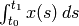
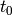
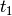
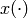
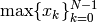
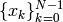
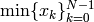

buildingspy.io Module for reading output files¶
This module contains the classes Reader that can be used to read *.mat files that have been generated by Dymola, and the class Reporter that can be used to report to the standard output and standard error streams.
- class buildingspy.io.outputfile.Reader(fileName, format)¶
Open the file fileName and parse its content.
Parameters: - fileName – The name of the file.
- format – The file format. Currently, the only supported value is dymola.
This class reads *.mat files that were generated by Dymola or OpenModelica.
- integral(varName)¶
Get the integral of the data series.
Parameter: varName – The name of the variable. Returns: The integral of varName. This function returns , where  is the start time and  the final time of the data series , and are the data values of the variable varName
- Usage: Type
>>> from buildingspy.io.outputfile import Reader >>> r=Reader("PlotDemo.mat", "dymola") >>> fanEnergy = r.integral('fan.PEle')
- max(varName)¶
Get the maximum of the data series.
Parameter: varName – The name of the variable. Returns: The maximum value of varName. This function returns , where  are the values of the variable varName
- Usage: Type
>>> from buildingspy.io.outputfile import Reader >>> r=Reader("PlotDemo.mat", "dymola") >>> fanEnergy = r.max('fan.PEle')
- mean(varName)¶
Get the mean of the data series.
Parameter: varName – The name of the variable. Returns: The mean value of varName. This function returns

where is the start time and the final time of the data series , and are the data values of the variable varName
- Usage: Type
>>> from buildingspy.io.outputfile import Reader >>> r=Reader("PlotDemo.mat", "dymola") >>> fanEnergy = r.mean('fan.PEle')
- min(varName)¶
Get the minimum of the data series.
Parameter: varName – The name of the variable. Returns: The minimum value of varName. This function returns , where are the values of the variable varName
- Usage: Type
>>> from buildingspy.io.outputfile import Reader >>> r=Reader("PlotDemo.mat", "dymola") >>> fanEnergy = r.min('fan.PEle')
- values(varName)¶
Get the time and data series.
Parameter: varName – The name of the variable. Returns: An array where the first column is time and the second column is the data series. - Usage: Type
>>> from buildingspy.io.outputfile import Reader >>> r=Reader("PlotDemo.mat", "dymola") >>> (time, fanPower) = r.values('fan.PEle')
- class buildingspy.io.reporter.Reporter(directory='.')¶
Class that is used to report errors.
- logToFile(log=True)¶
Function to log the standard output and standard error stream to a file.
Parameter: log – If True, then the standard output stream and the standard error stream will be logged to a file. This function can be used to enable and disable writing of the standard output stream to the file ‘’stdout.log’‘, and the standard error stream to the file stderr.log. The default setting is True
- writeError(message)¶
Writes an error message.
Parameter: message – The message to be written. Note that this method adds a new line character at the end of the message.
- writeOutput(message)¶
Writes a message to the standard output.
Parameter: message – The message to be written. Note that this method adds a new line character at the end of the message.